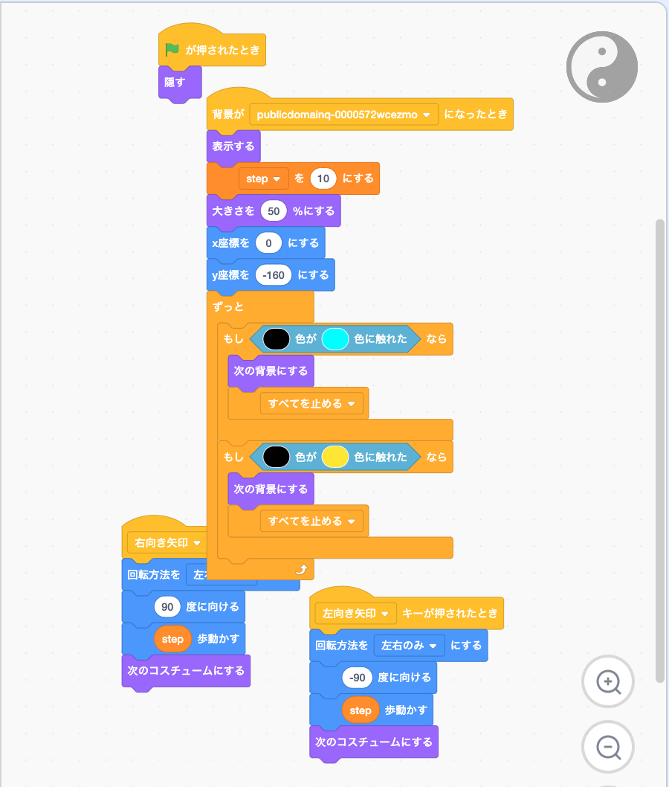
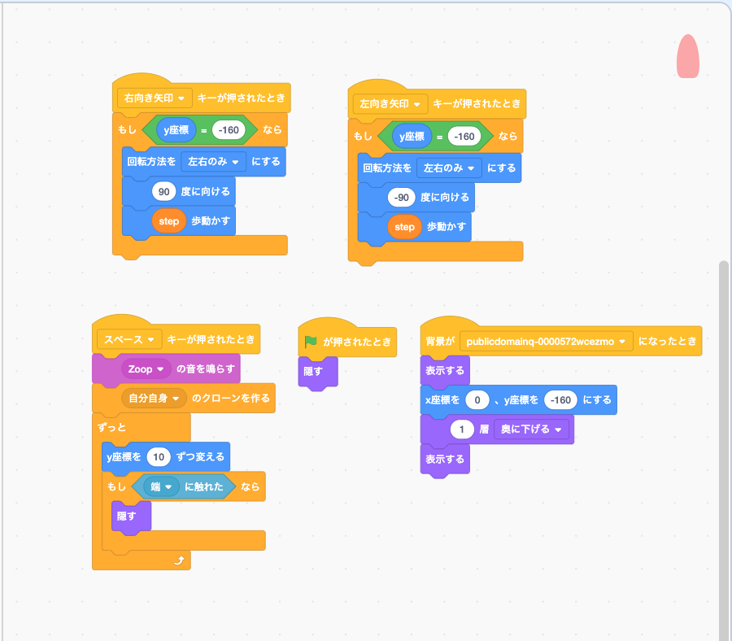
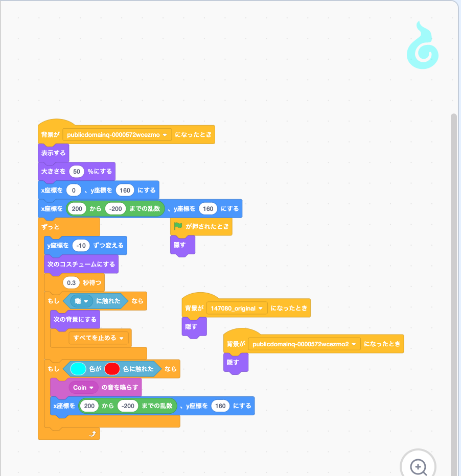
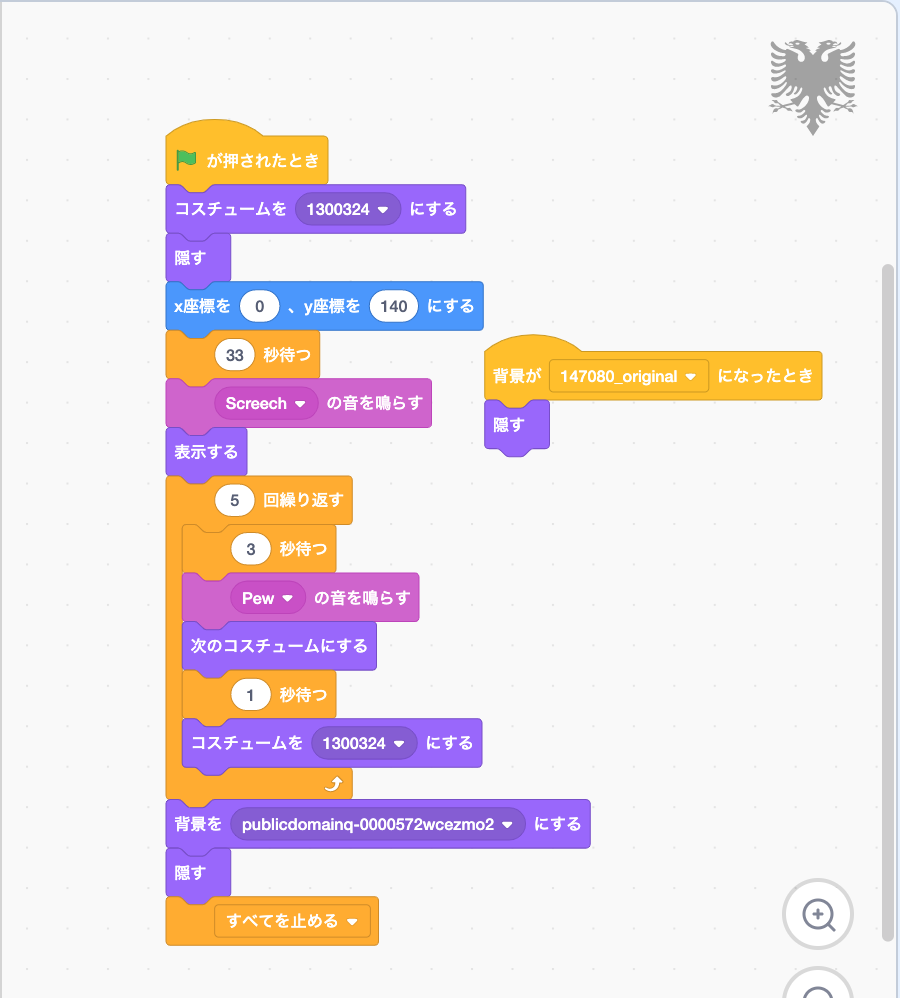
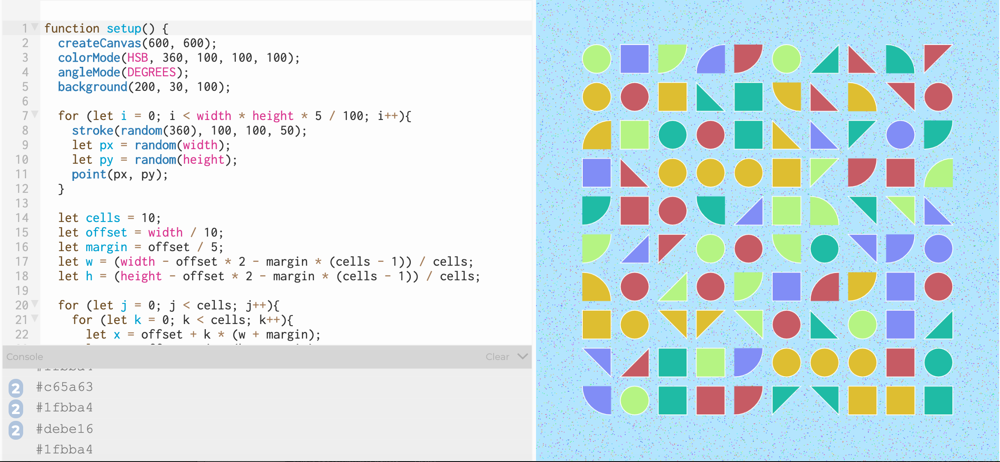
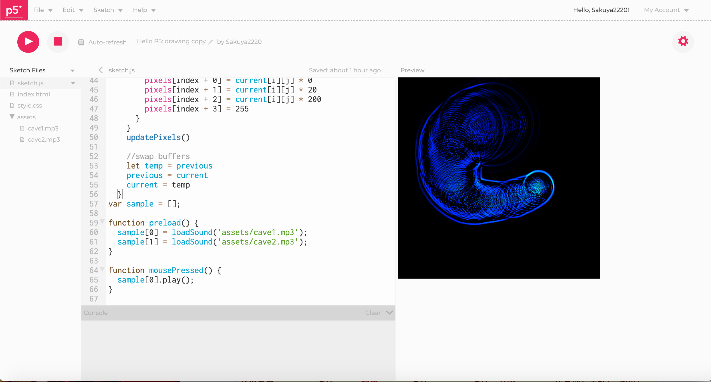

ソフトウェアネットワーク演習Ⅱ
Sesson1
Arduinoを用いた２つ以上のランプ反応を示す機構、またはmiclobitを用いたミニゲームの作成
＜Arduinoを用いた、２種類のランプ反応をしめす人感センサー＞Arduino、人感センサー、磁気センサーを用いて作成。
授業中に教わったコードを応用して（というか少し書き換えただけ）通常時、磁気帯時で異なるランプの反応を示す。
・通常時
動きを感知して、一瞬ランプが点灯する。
・磁気帯時
磁気、動き共に感知した場合、２秒間に渡ってランプが点灯する。磁気のみ感知した場合はランプ点灯なし。
＜追記＞
提出した課題とは別にmiklomaitを用いて、ボタンを押すと自分の好きな音楽が流れる装置を作った。
特にそれ以外の機能は持ち合わせていない。
Sesson2
scratchまたはmicrobitを用いたゲームの作成

まず、こちらが完成したものになる。
こちらは某シューティングゲームをモデルにして作ったものである。
そこまで難しいものは使っておらず、基本的な動作の組み合わせて作成した。
自機

弾

敵

ボス

Sesson3
M2M連携のプログラム作成
今回はp5.jsを用いたM2M連携プログラムを作成した。
まず初めに授業内で作成した物がこちらになる。

今回は反応する水の波紋を作りたいと思い、クリックで水の波紋と音が鳴るようにした。もちろんドラッグでも反応する。
これはネットで公開されていたものをアレンジして作成した。
ただし少し欠点があり、連続で波紋を発生させるとかなりPCが重たくなってしまう。
これは同じコマンドを何度も実行しているため、仕方のないことだと思った。
